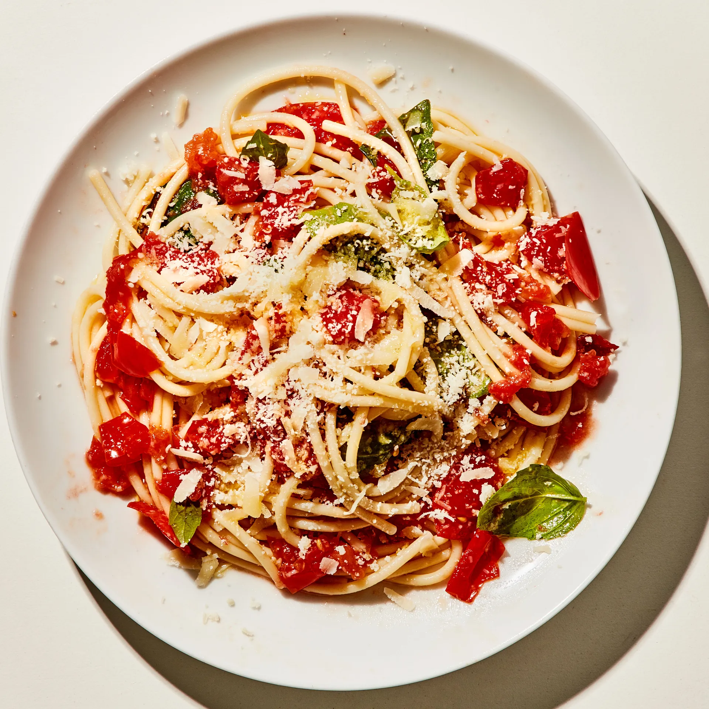

SI 339 Eats
Venezuelan Arepas

Source: Healthier Steps
Category: Main Course
Mix cornbread with water and salt and form them into several discs. Cook it on an oiled skillet until it is crisp on the outside. Then place into a preheated oven. When they are nice and crisp, split the arepas and fill them with beans, cheese, meat, or vegetables.
Recipe Ingredients:
- 2 cups of cornmeal
- 2 1/2 cups of water
- 1 tsp of salt
- 1 tsp of vegetable oil your choice of filling
Recipe Steps:
- Preheat oven to 400F
- Pour water into large bowl
- Dissolve the salt into the water
- Slowly add cornmeal
- Mix until the water salt and cornmeal are all blended
- After it is blended, set the bowl aside for 5 minutes
- Make your hands wet and begin to pat the dough into discs
- Keep creating discs (make sure there are no cracks) and place them onto a nonstick pan with vegetable oil
- Flip each arepa after 5 minutes
- Place the arepas onto a baking sheet and place them into the preheated oven
- After 10 minutes, remove them, cut them open and fill them with your desired ingredients.
Additional Images


Additional Images
Dead Simple Fried Rice

Source: Self
Category: Main Dish
This Dead Simple Fried Rice recipe is an incredibly modular and tasty dish. At its core, it's just rice, vegetables, protein, and oil. As such, the dish can be modified to serve as many or as few people as needed with a wide variety of food preferences. Experimentation with what specific ingredients you enjoy the most will unlock the full potential of this dish.
Recipe Ingredients:
- Long-grain white rice
- Frozen Vegetables
- Eggs
- (optional) Milk
- Oil of Choice
- Salt
- Soy Sauce
- (optional) Additional Sauce
- (optional) Additional Protein of Choice
- (optional) Additional Fresh Vegetable
Recipe Steps:
- In a rice cooker, add half a cup of rice, a cup of water, a touch of oil, and a pinch of salt. Cook the rice. Tip: if there are tough frozen veggies, such as broccoli, you might want to add the frozen veggies to the integrated steamer basket.
- On high medium heat on your stovetop, in a frying pan, add your chosen oil. Add some milk if desired. Then, scramble the eggs.
- Before the eggs are fully done, add the frozen vegetables. Add fresh vegetables when required so they are fully cooked by the end.
- (Optional) Add the additional protein when required so they are fully cooked by the end.
- Once the rice is done, add it to the pan. Poor your desired amount of Soy Sauce. Stir well.
- Let the fried rice cook until the dish is nice and hot and fully cooked.
- Plate the fried rice. Enjoy!
Additional Images


Additional Images
Tomato Basil Pasta
Source: Bon Appetit
Category: Main Dish
This recipe is a fantastic way to step up your pasta game without taking too much more of your time. It tastes way better than basic pasta with jarred sauce! I originally found this when my sister made it, and got the recipe off of Bon Appetit's website. PS avoid using the shaker parmesan; I used that the first time I made this and it drew down the quality of the dish.
Recipe Ingredients:
- Pasta
- Tomatoes (any larger than cherry)
- Basil
- Red Wine Vinegar
- Extra Virgin Olive Oil
- Crushed Red Pepper
- Finely Grated Block of Parmesan
Recipe Steps
- Cut tomatoes along equator
- Squeeze juice and seeds out of tomatoes and discard
- Cut juiced tomatoes into small-ish pieces
- Smush down with large spoon to release some leftover juices
- Add in vinegar, olive oil, crushed red pepper and half of parmesan
- Let marinate for half an hour
- Add basil
- Cook pasta
- Toss marinade with cooked pasta and serve topped with remaining parmesan
Additional Food Images


Additional Food Images
Peanut Butter and Jelly Sandwich

Source: Alex Likens
Category: Main Dish
This is a dish that is great at all times of year. Its mix of savory flavors with sweet jelly make sit a favorite dish for many people. This dish is great for any situation whether you are on the go, in a rush, or just looking for a tasty meal in your home.
Recipe Ingredients
- Bread
- Peanut Butter
- Jelly
Recipe Steps
- Take two piece of bread and place them on a plate
- Put a thick layer of jelly on one piece of the bread
- Put a thick layer of peanut butter on the other piece of the bread
- Put the two pieces of bread together so they face each other
Additional Food Images


Additional Food Images
Tomato and Eggs

Source: Own Recipe
Category: Main Dish
Tomato and eggs is a hot dish which originated from China. It is a simple and fast dish to make, but it has good nutritional value. It is a very satisfying food to eat and popularly served with rice and topped with green onions.
Recipe Ingredients
- Tomatoes
- Eggs
- Salt
- Sugar
- Cooking oil
Recipe Steps
- Crack eggs into a bowl and mix until scrambled
- Cut tomatoes into pieces around the size of your thumb
- Oil a hot pan and cook the eggs until satisfied then remove the eggs
- Re-oil the pan and cook the tomatoes until they loosen
- Combine eggs and tomatoes and season with salt and sugar
Additional Food Images


Additional Food Images